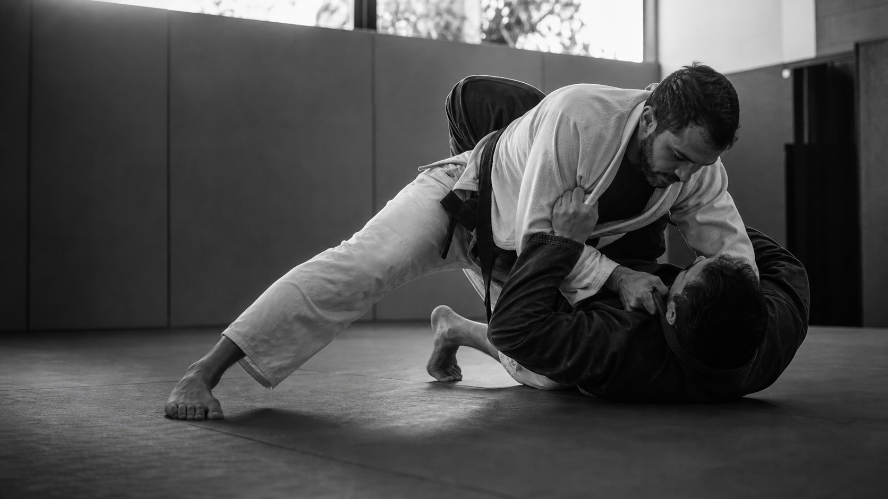

Aquecemos com propósito, despertando mobilidade, atenção e prontidão para treinar com segurança.

Forjados
no tatame.
Técnica sob pressão. Respeito em cada treino. Evolução construída em equipe.
Nosso códigoManifesto
Não treinamos para parecer fortes.
Treinamos para permanecer.
Na Bushido, cada rola revela o que ainda precisa ser lapidado. Sem atalhos. Sem personagem. Apenas presença, repetição e confiança construída round após round.
O tatame coloca todos diante da mesma verdade: sempre existe algo para aprender. Uma posição que precisa de mais calma, um movimento que exige precisão ou uma decisão que deve acontecer no tempo certo.
Treinar é aceitar esse processo. É reconhecer limites sem se acomodar neles, ajudar o parceiro a evoluir e entender que nenhuma graduação substitui a disposição de continuar aprendendo.
Texto-base editorial — será refinado com a história real da equipe.
O que nos moveTrês pilares
O caminho é coletivo.
- 01
Técnica
Entender antes de acelerar. Cada detalhe importa: a base, a postura, a pegada, o espaço e o momento de agir. A precisão transforma esforço em eficiência e permite que o jiu-jitsu continue funcionando mesmo sob pressão.
- 02
Constância
Voltar ao tatame. Repetir, errar, corrigir e tentar novamente. O progresso não acontece em um único treino; ele aparece na soma dos dias em que escolhemos continuar, inclusive quando a evolução parece silenciosa.
- 03
Respeito
Cuidar de quem treina ao lado é parte inseparável da evolução. Respeitamos o ritmo, os limites e a história de cada integrante, porque um treino forte também precisa ser seguro, consciente e coletivo.
Dentro do treinoRotina
Todo round
deixa uma marca.
Cada treino reúne preparação, estudo e prática. O objetivo não é apenas executar movimentos, mas aprender a tomar decisões com clareza enquanto o corpo está sob pressão.
Estudamos posições por partes, entendendo não apenas o movimento, mas o problema que ele resolve.
No treino situacional e no rola, a técnica encontra resistência, tempo e escolhas que não podem ser ensaiadas.
Terminamos cada sessão com mais experiência e com a responsabilidade de contribuir para o próximo treino.
Arquivo vivoEm construção
Nossa história ainda vai ocupar este espaço.
A história de uma equipe não é feita somente de resultados. Ela também vive nos primeiros treinos, nas dificuldades superadas, nas graduações, nas viagens e nas pessoas que ajudaram a construir o caminho.
Este espaço será o arquivo vivo da Bushido. Atletas, campeonatos, encontros e momentos importantes entrarão aqui conforme o acervo da equipe for organizado.
Conteúdo em construção — os registros reais da equipe serão adicionados nas próximas versões.
01
Primeiro treino
O dia em que tudo começou. O tatame vazio, a expectativa, a primeira saudação.
02
Primeira graduação
Faixas brancas que ganharam sua primeira listra. O reconhecimento do esforço.
03
Primeiro campeonato
A equipe representada fora de casa. Vitórias, derrotas, aprendizado coletivo.
04
Encontro anual
Todos no mesmo tatame. Almoço, conversa, o vínculo que ultrapassa o treino.